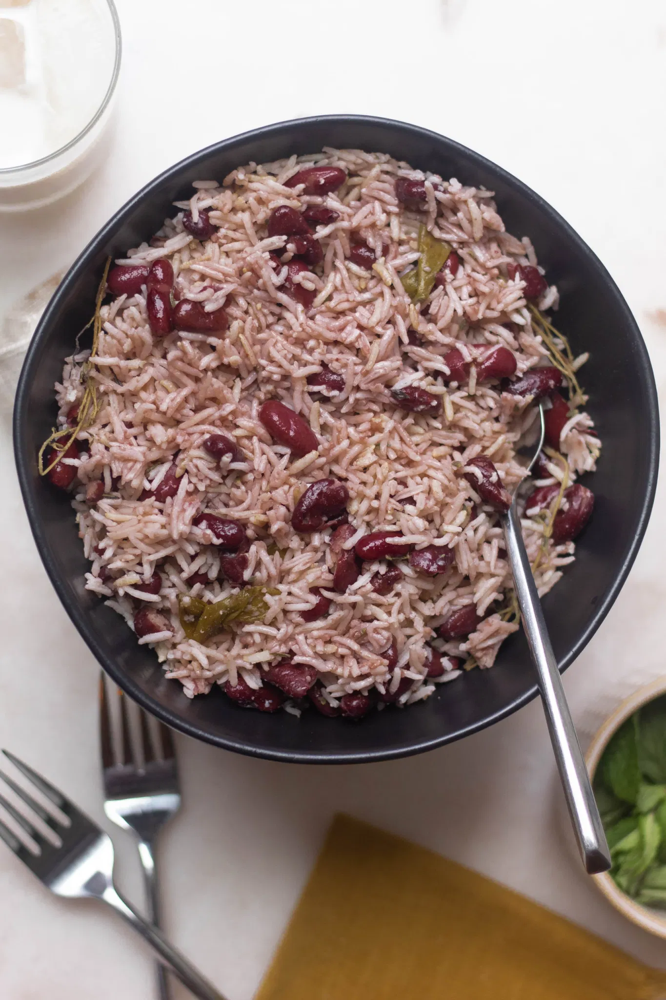

Site created with
Site created with
A recipe for success: Uncle Bob Verity's rice 'n' peas
Posted: December 20, 2021Last modified: December 25, 2021
Author: Dom Verity
What could be more fitting than to kick off this blog by recycling a post I wrote a few years ago about my favourite dish rice ‘n’ peas. Given the season, indeed, I should mention that no Jamaican Christmas would be complete without a vast pot of this staple weighing down the family lunch table. I’ll start with a little personal history, but scroll down in the full article if you’re keen to get straight to my Grandfather’s recipe for rice ‘n’ peas.
My family hail from the West Indies or, more precisely, I should say that we are proud Jamaicans. That point of geographic specificity is an important one since, contrary to common belief, it is far from the case that those of us who hail from the Greater and Lesser Antilles are cut from a common cultural stock. We do, of course, share a common colonial history but, for us, the differences between Jamaicans, Barbadians and Trinidadians are as profound as those that separate the French and the English.
Beyond our geographic proximity, it seems to me that we have only ever been bound together by three great cultural institutions - our once celebrated cricket team, the University of the West Indies, and our love of creole food. I’ll tell you a little about the last of these later on, and with luck I’ll get you cooking like a true Jamaican.
Uncle Bob
When I was a child in Kingston, my grandfather was known universally as “Uncle Bob”. He was someone who was recognised, and regarded with much affection, by everyone in the city at that time, or so it seemed to me.
He had been a broadcaster and lecturer for many years but was much better known for the many cultural institutions he had helped found, all to the end of furthering the lot of Kingston’s poor. This included the central public market, where those from the country came to sell their produce, and his beloved Junior Centre of the Institute of Jamaica.
Indeed, it was his devotion to the education of all, and most particularly his absolute commitment to the poor children of our community, that inspired me to follow his footsteps into the classroom.
Over the years I have come to appreciate, and revel in, just how much of Uncle Bob I have inherited; whether directly, in my early childhood, or indirectly via my father, his son Jeremy. These include key aspects of my personality, my world view, my likes and dislikes, my mannerisms and so much more, which remind me of him every day. While I cannot say that my mathematical and technical interests stem from this source, it is certainly true that my love of Jamaican food comes directly from his generous dinner table.
Rice ‘n’ Peas
|  |
| Image (c) 2020 Sweet and Sorrel |
Those of you who know Jamaica, even in passing, will know that no significant meal is complete without a bowl of Rice ‘n’ Peas. So there can be no better way to honour the memory of Uncle Bob than to share with you his recipe for that iconic Jamaican dish.
You should also know that the “peas” in rice ‘n’ peas are not peas at all, they are actually Red Kidney Beans (called red peas) or sometimes Pigeon Peas (called gungo peas). For you see, in Jamaican creole we just don’t use the word bean at all; instead anything small, roundish and edible is called simply a pea.
So here goes. This is my first go at recounting a recipe, so I take no responsibility for the outcome and you enter here at your own risk. All I can promise is that this always works really well for me.
Ingredients
- 3 x 400ml tins of coconut cream.
- 3 x 400g tins of red kidney beans (you can use dried if you like, but make sure you wash, soak and cook them thoroughly - I just don’t have the patience any more).
- a whole good hot red chilli. Jamaicans greatly prefer Scotch Bonnet peppers, but these can be difficult find in Australia and I have found Habaneros to be an acceptable compromise.
- 5 or 6 spring onions.
- 2 cloves of garlic.
- a generous bunch of fresh thyme (this is very important, thyme is a signature flavour in all Jamaican cookery).
- a bacon bone (I usually use about 300g of bacon lardons or finely chopped bacon, but the bone is cooler :).
- long grain rice (about 3 or 4 standard cups).
- salt and freshly ground black pepper.
This recipe can be made vegetarian or Kosher friendly by leaving out the bacon. But if you aren’t worried about such things a good bacon bone really does lift this dish.
| Image (c) 1954 Marcia Brown |
Anansi and his family were starving. One day Anansi was walking in the forest and his foot kicked over a pot which was just lying on the ground.
“What a pretty little pot!” Anansi exclaimed. “Don’t call me pretty pot,” the pot replied. “So what a must call you?” asked Anansi. “Call me ‘Do mek mi see!’” replied the pot.
Anansi feel kinda foolish, but since him never had nothing better to do him call out, “Do mek mi see!”
Immediately the pot begin to cook up a delicious dinner of chicken and rice ‘n’ peas. The smell nearly kill Anansi who was very hungry. Him eat an eat till him belly nearly burst. But as he was about to wash out the pot in the nearby river, the pot shouted, “No! No! You mus never wash me. Leave me same way you find me.”
So Anansi turn down the pot and hide it under some leaves and went home with a big bellyful. When he reached home his wife and children eagerly asked him if he had brought any food. He gave them two little wingy bananas he had found in the bushes and didn’t tell them his secret.
- from “Anansi and the Magic Pot” a Jamaican Anansi folk tale of the West African Asante tradition
Since most of us don’t have a magic pot to fall back on, we’re going to have to do a little work to make our rice ‘n’ peas:
Method
Movement One

|
| Image (c) 2021 XKCD |
Pour the coconut cream into a large cooking pot and start the heat to bring it to the boil. Strain the brine from the kidney beans and add them to the pot.
You will often find that a can of kidney beans has a red “sludge” at the bottom of it. I like to add a little water to the can, swill it around to suspend that sludge and add the resulting red liquid to the pan. This will help to give the rice ‘n’ peas a nice ruddy colour.
Now take your bunch of thyme, which as I said in the ingredients should be a generous one, and bind it together with a piece of cooking twine. Add this to the pot along with the whole red chilli.
Now peel the garlic cloves, crush them with the side of a knife and add them to the pot. Prepare the spring onions by topping and tailing them, peeling of the outer layer and chopping into 2-3cm length. Also crush these with the side of the knife and add them to the pan.
At this point you should also add the bacon bone or lardons. Bring this all to the boil, cover, turn down the heat and leave to simmer gently for 40-50 minutes. It is almost impossible to overcook this dish, so if you go over time a little don’t worry.
Now you should have an excellent cooking liquor for the rice. Remove the bacon bone, if you are using it, the bunch of thyme (which should now have lost all its leaves) and the whole chilli. Separate this liquor from the beans by passing it through a sieve, reserving both the liquor and the beans.
Warning: do not pour this liquor away this is the most important part of the dish, as it will eventually be absorbed into the rice to give it a wonderful coconut flavour.
Movement Two
Return the bean mixture to the pan. Get hold of a potato masher and mash about 1/3 of the beans into a paste. At this stage if there are any large pieces of spring onion left you should make sure that these are also mashed into the bean paste.
Now use a cup to measure the cooking liquor back into the pan. You will need to have twice as many cups of this liquor as you have cups of rice to cook. So, if necessary add a cup or two of water to bring your liquid up to the right volume.
Stir the beans, bean paste and cooking liquor together thoroughly. Now check the liquid for flavour. It should be about as salty as you would usually have the water for cooking rice in. If necessary add extra salt and grind in some black pepper.
Once you are happy with the favour of your liquid, measure in your cups of rice and bring everything gently to the boil. Cover and turn the heat as low as you can get it. Now cook this just as you normally would in the absorption method for rice. This should take 20-25 minutes, the dish is ready when the rice is cooked (just past the al dente phase).
It is quite important to get the heat as low as you can, to avoid having the rice burn on the bottom of the pan. I guess you could use a rice cooker if you like, but I don’t have one of these.
But don’t worry too much if the rice starts stick a little to the bottom of the pan. Much like a paella a socarrat, or layer of toasted rice at the bottom of the pan, can be a good thing so long as it doesn’t burn. Just scrape this off the bottom before you serve and stir it into the dish.
Serving
This is the very best accompaniment for any stew or curry. I particularly like to have it with fricasee chicken or curried goat, two Jamaican favourites. Indeed curried goat was the very best thing about school lunches when I was a pickney.
You might also consider getting hold of a bottle of Pickapeppa sauce to pep up your rice ‘n’ peas feast; this iconic Jamaican condiment is celebrating its 100th Birthday this year.
I like to make up a big batch of rice ‘n’ peas and separate it into family serving size containers for the freezer, where it will keep for a couple of months. These can be defrosted and reheated in the microwave or, if you like a bit of a paella style crust, your can defrost and then fry in a frying pan with some butter.
The Last Word - from Uncle Bob
As I suggested in my introduction, with this dish you will find that only More is More. It will always leave your guests wanting to return to your table.
As my grandfather would always say at the end of a good meal “God be praised my belly is raised an inch above the table, the Devil be damned for I have nyaamed (eaten) as much as I am able!”.